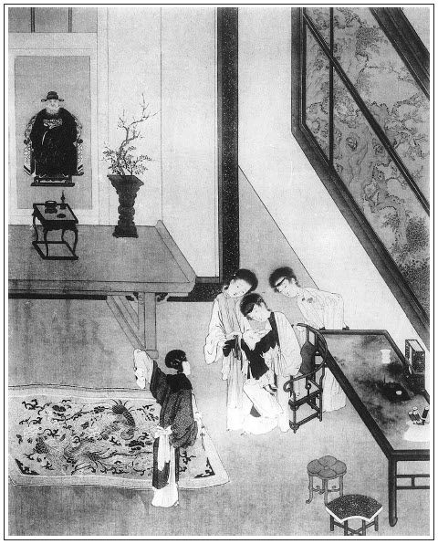

張回此回專為佞佛邀福者下一針砭。
玉皇廟，兩番描寫，俱是熱鬧時候。即後文薦亡，亦是熱鬧之時，特特與永福寺對照也。
看他平空撰出兩付對聯，一個疏頭，卻使玉皇廟是真廟，吳道官、西門慶等俱是活人。妙絕之筆。
玉樓因看道士做的鞋，便想其有老婆。金蓮因道士老婆，即想及尼僧漢子。王姑子直欲不做和尚，而金蓮又因尼僧漢子為和尚，想及和尚老婆為尼僧。然則官哥為小道士，瓶兒不幾幾乎與道士有嫌疑之瓜葛乎？世人每愚而不悟，一味佞佛邀福，仙佛有靈，當亦大笑。
內中如道士改孩子姓，花大不應稱舅，皆極可笑事，而確是人情必有之事，作者特借金蓮口中說出。
篇末偏於道家法事之後，又撰一段佛事，使王姑子彰明較著，談一回野孤禪，與上文道事相映成趣也。然而三十二祖投胎，又明為孝哥預描一影。則孝哥生幾露，而西門死幾發矣。可畏哉玉皇廟寄名，接王姑子談經，與後千金喜捨，接二姑子印經，又是遙對章法。
詩曰：
漢武清齋夜築壇，自斟明水醮仙官。
殿前玉女移香案，雲際金人捧露盤。
絳節幾時還入夢？碧桃何處更驂鸞？
茂陵煙雨埋弓劍，石馬無聲蔓草寒。張旁冷盡千古佞福癡人。

話說當日西門慶在潘金蓮房中歇了一夜。那婦人恨不的鑽入他腹中，在枕畔千般貼戀，萬種牢籠，淚搵鮫鮹，語言溫順，實指望買住漢子心。不料西門慶外邊又刮剌上了王六兒，張夾一轉奇絕。替他獅子街石橋東邊，張旁必於獅子街，明為金、瓶之續。使了一百二十兩銀子，買了一所房屋居住。門面兩間，到底四層，一層做客位，一層供養佛像祖先，一層做住房，一層做廚房。自從搬過來，那街坊鄰舍知他是西門慶夥計，不敢怠慢，張旁便伏苗青。都送茶盒與他，又出人情慶賀。那中等人家稱他做韓大哥、韓大嫂。以下者趕著以叔嬸稱之。西門慶但來他家，韓道國就在鋪子裡上宿，教老婆陪他自在頑耍。朝來暮往，街坊人家也都知道這件事，懼怕西門慶有錢有勢，誰敢惹他！
見一月之間，西門慶也來行走三四次，與王六兒打的一似火炭般熱。
看看臘月時分，張夾又是一年，正月許多事，卻自此六字起，須記清。西門慶在家亂著送東京並府縣、軍衛、本衛衙門中節禮。有玉皇廟吳道官使徒弟送了四盒禮物，並天地疏、新春符、謝灶誥。西門慶正在上房吃飯，玳安兒拿進帖來，上寫著：「王皇廟小道吳宗哲頓首拜。」西門慶看了說道：「出家人，又教他費心。」吩咐玳安，叫書僮兒封一兩銀子拿回帖與他。月娘在旁，因話題起道：張旁如此引入。「一個出家人，你要便年頭節尾受他的禮物，到把前日你為李大姐生孩兒許的願醮，就叫他打了罷。」西門慶道：「早是你題起來，我許下一百二十分醮，我就忘死了。」月娘道：「原來你是個大謅答子貨！誰家願心是忘記的？你便有口無心許下，神明都記著。嗔道孩兒成日恁啾啾唧唧的，想就是這願心未還壓的他。」繡眉是婦人信神口角。張夾癡的好笑。西門慶道：「既恁說，正月裡就把這醮願，在吳道官廟裡還了罷。」月娘道：「昨日李大姐說，這孩子有些病痛兒的，要問那裡討個外名。」西門慶道：「又往那裡討外名？就寄名在吳道官廟裡就是了。」因問玳安：「他廟裡有誰在這裡？」玳安道：「是他第二個徒弟應春跟禮來的。」西門慶一面走出外邊來，那應春連忙磕頭說道：「家師父多拜上老爹，沒什麼孝順，使小徒弟來送這天地疏並些微禮兒，與老爹賞人。」西門慶止還了半禮，說道：「多謝你師父厚禮。」一面讓他坐。應春道：「小道怎麼敢坐！」西門慶道：「你坐了，我有話和你說。」那道士頭戴小帽，身穿青布直裰，謙遜數次，方才把椅兒挪到旁邊坐下，問道：「老爹有甚鈞語吩咐？」西門慶道：「正月裡，我有些醮願，要煩你師父替我還還兒，就要送小兒寄名，不知你師父閒不閒？」徒弟連忙立起身來說道：「老爹吩咐，隨問有甚經事，不敢應承。請問老爹，訂在正月幾時？」西門慶道：「就訂在初九，爺旦日罷。」徒弟道：「此日正是天誕。又《玉匣記》上我請律爺交慶，五福駢臻，修齋建醮甚好。請問老爹多少醮款？」西門慶道：「今歲七月，為生小兒許了一百二十分清醮。」徒弟又問：「那日延請多少道眾？」西門慶道：「請十六眾罷。」說畢，左右放桌兒待茶。先封十五兩經錢，另外又是一兩酬答他的節禮，又說：「道眾的襯施，你師父不消備辦，我這裡連阡張香燭一事帶去。」喜歡的道士屁滾尿流，臨出門謝了又謝，磕了頭兒又磕。張夾有玉皇廟之熱，方有永福寺之冷。
到正月初八日，先使玳安兒送了一石白米、一擔阡張、十斤官燭、五斤沉檀馬牙香、十六疋生眼布做襯施，又送了一對京段、兩壇南酒、四隻鮮鵝、四隻鮮雞、一對豚蹄、一腳羊肉、十兩銀子，與官哥兒寄名之禮。西門慶預先發帖兒，請下吳大舅、花大舅、應伯爵、謝希大四位相陪。陳敬濟騎頭口，先到廟中替西門慶瞻拜。到初九日，西門慶也沒往衙門中去，絕早冠帶，騎大白馬，僕從跟隨，前呼後擁，竟出東門往玉皇廟來。遠遠望見結綵寶幡，過街榜棚。須臾至山門前下馬，睜眼觀看，果然好座廟宇。但見：
青松鬱鬱，翠柏森森。金釘朱戶，玉橋低影軒官；碧瓦雕簷，繡幙高懸寶檻。七間大殿，中懸敕額金書；兩廡長廊，彩畫天神帥將。張夾又照第一回。三天門外，離婁與師曠猙獰，左右階前，自虎與青龍猛勇。八寶殿前，侍立是長生玉女，九龍床上，坐著個不壞金身。金鐘撞處，三千世界盡皈依；玉磬鳴時，萬象森羅皆拱極。朝天閣上，天風吹下步虛聲；演法壇中，夜月常聞仙佩響。自此便為真紫府，張旁明點心字。更於何處覓蓬萊？
西門慶由正門而入，見頭一座流星門上，七尺高朱紅牌架，列著兩行門對，大書：
黃道天開，祥啟九天之閶闔，迓金輿翠蓋以延恩；
玄壇日麗，光臨萬聖之幡幢，誦寶笈瑤章而闡化。
到了寶殿上，懸著二十四字齋題，大書著：「靈寶答天謝地，報國酬恩，九轉玉樞，酬盟寄名，吉祥普滿齋壇。」兩邊一聯：
先天立極，仰大道之巍巍，庸申至悃；
昊帝尊居，鑒清修之翼翼，上報洪恩。張旁玉皇端兩番描寫，卻不覺正。
西門慶進入壇中香案前，旁邊一小童捧盆中盥手畢，鋪排跪請上香。張旁以上一段叩壇。西門慶行禮叩壇畢，只見吳道官頭戴玉環九陽雷巾，身披天青二十八宿大袖鶴氅，腰繫絲帶，忙下經筵來，與西門慶稽首道：「小道蒙老爹錯愛，迭受重禮，使小道卻之不恭，受之有愧。就是哥兒寄名，小道禮當叩祝，增延壽命，何以有叨老爹厚賞，誠有愧赧。經襯又且過厚，令小道愈不安。」西門慶道：「厚勞費心辛苦，無物可酬，薄禮表情而已。」敘禮畢，兩邊道眾齊來稽首。一面請去外方丈，三間廠廳名曰松鶴軒，那裡待茶。西門慶剛坐下，就令棋童兒：「拿馬接你應二爹去。只怕他沒馬，如何這咱還沒來？」玳安道：「有姐夫騎的驢子還在這裡。」西門慶道：「也罷，快騎接去。」棋童應諾去了。吳道官誦畢經，下來遞茶，陪西門慶坐，敘話：「老爹敬神一點誠心，小道都從四更就起來，張旁活畫愚人。到壇諷誦諸品仙經，今日三朝九轉玉樞法事，都是整做。又將官哥兒的生日八字，另具一文書，奏名於三寶面前，起名叫做吳應元。永保富貴遐昌。小道這裡，又添了二十四分答謝天地，繡旁感謝。張旁何處算帳？十二分慶贊上帝，二十四分薦亡，共列一百八十分醮款。」西門慶道：「多有費心．」不一時，打動法鼓，請西門慶到壇看文書。西門慶從新換了大紅五彩獅補吉服，腰繫蒙金犀角帶，到壇，有絳衣表白在旁，先宣念齋意：
大宋國山東清河縣縣牌坊居住，奉道祈恩，酬醮保安，信官西門慶，本命丙寅年七月廿八日子時建生，同妻吳氏，本命戊辰年八月十五日子時建生。
表白道：「還有寶眷，小道未曾添上。」西門慶道：「你只添上個李氏，辛未年正月十五日卯時建生，同男官哥兒，丙申年七月廿三日申時建生罷。」表白文宣過一遍，接念道：張夾前雲戊申，此雲丙申；前雲六月，此雲七月。總見寓言也。
領家眷等，即日投誠，拜干洪造。伏念慶一介微生，三才未品。出入起居，每感龍天之護佑；迭遷寒暑，常蒙神聖以匡扶。職列武班，叨承禁衛，沐恩光之寵渥，享符祿之豐盈。是以修設清醮，共二十四分位，答報天地之洪恩，張夾如此便可答天地乎！酬祝皇王之巨澤。又修清醮十二分位，茲逢天誕，慶贊帝真。介五福以遐昌，迓諸天而下邁。慶又於去歲七月二十三日，因為側室李氏生男官哥兒，要祈坐蓐無虞，臨盆有慶。又願將男官哥兒寄於三寶殿下，賜名吳應元，告許清醮一百二十分位，續箕裘之㣧嗣，保壽命之延長。附薦西門氏門中三代宗親等魂：張旁反云「附薦」，可歎！祖西門京良，祖妣李氏；先考西門達，妣夏氏；故室人陳氏，及前亡後化，升墜罔知。是以修設清醮十二分位，恩資道力，均證生方。共列仙醮一百八十分位，仰干化單，俯賜勾銷。謹以宣和三年正月初九日天誕良辰，特就大慈玉皇殿，仗延官道，修建靈寶，答天謝地，報國酬盟，慶神保安，寄名轉經，吉祥普滿大齋一晝夜。延三境之司尊，迓萬天之帝駕。一門長叨均安，四序公和迪吉。統資道力，介福方來。謹意。張夾前子平即有子平諸話頭，相面便有風鑒的話頭，今又撰一疏頭。逼真如畫，文筆之無微不出，所以為小說之第一也。
宣畢齋意，鋪設下許多文書符命、表白，一一請看，共有一百八九十道，甚是齊整詳細。又是官哥兒三寶蔭下寄名許多文書、符索、牒札，不暇細覽。西門慶見吳道官十分費心，於是向案前炷了香，畫了文書，叫左右捧一疋尺頭，與吳道官畫字。吳道官固辭再三，方令小童收了。張眉以上一段押文書。然後一個道士向殿角頭咕碌碌擂動法鼓，張旁寫得出。有若春雷相似。合堂道眾，一派音樂響起。吳道官身披大紅五彩法氅，腳穿朱履，手執牙笏，關發文書，登壇召將。兩邊鳴起鍾來。鋪排引西門慶進壇裡，張夾一路寫得活見鬼。向三寶案左右兩邊上香。西門慶睜眼觀看，果然鋪設齋壇齊整。但見：
位按五方，壇分八級。上供三請四御，旁分八極九霄，中列山川岳瀆，下設幽府冥官。香騰瑞靄，千枝畫燭流光；花簇錦筵，百盞銀燈散彩。天地亭，高張羽蓋；玉帝堂，密佈幢幡。金鐘撞處，高功躡步奏虛皇；玉珮鳴時，都講登壇朝玉帝。絳綃衣，星辰燦爛；美蒙冠，金碧交加。監壇神將猙獰，直日功曹猛勇。青龍隱隱來黃道，白鶴翩翩下紫宸。張夾又寫壇場，極力作盛滿之筆，後文薦亡相映也。
西門慶剛繞壇拈香下來，張眉以上一段入壇。被左右就請到松鶴軒閣兒裡，地鋪錦毯，爐焚獸炭，那裡坐去了。不一時，應伯爵、謝希大來到。唱畢喏，每人封了一星折茶銀子，說道：「實告要送些茶兒來，路遠。這些微意，權為一茶之需。」西門慶也不接，說道：「奈煩！自恁請你來陪我坐坐，又幹這營生做什麼？吳親家這裡點茶，我一總都有了。」應伯爵連忙又唱喏，說：「哥，真個？俺每還收了罷。」因望著謝希大說道：張旁又與第一回開口作映。張夾白描。「都是你幹這營生！我說哥不受，拿出來，倒惹他訕兩句好的。」繡旁收拾得妙。良久，吳大舅、花子由都到了。每人兩盒細茶食來點茶，西門慶都令吳道官收了。吃畢茶，一同擺齋，鹹食齋饌，點心湯飯，甚是豐潔。西門慶同吃了早齋。原來吳道官叫了個說書的，說西漢評話《鴻門會》。繡旁寫出道家行徑。張旁《金瓶》內，偏有此能。吳道官發了文書，走來陪坐，問：「哥兒今日來不來？」西門慶道，「正是，小頑還小哩，房下恐怕路遠諕著他，來不的。到午間，拿他穿的衣服來，三寶面前，攝受過就是一般。」吳道官道：「小道也是這般計較，最好。」西門慶道：「別的倒也罷了，他只是有些小膽兒。家裡三四個丫鬟連養娘輪流看視，只是害怕。貓狗都不敢到他跟前。」繡旁冷脈。張旁早為死兆點明。吳大舅道：「孩兒們好容易養活大──」正說著，只見玳安進來說：「裡邊桂姨、銀姨使了李銘、吳惠送茶來了。」西門慶道：「叫他進來。」李銘、吳惠兩個拿著兩個盒子跪下，揭開都是頂皮餅、松花餅、白糖萬壽糕、玫瑰搽穰卷兒。西門慶俱令吳道官收了，因問李銘：「你每怎得知道？」李銘道：「小的早晨路見陳姑夫騎頭口，問來，才知道爹今日在此做好事。歸家告訴桂姐、三媽說，旋約了吳銀姐，才來了。多上復爹，本當親來，不好來得，這粗茶兒與爹賞人罷了。」西門慶吩咐：「你兩個等著吃齋。」吳道官一面讓他二人下去，自有坐處，連手下人都飽食一頓。
話休饒舌。到了午朝，拜表畢，吳道官預備了一張大插桌，又是一壇金華酒，又是哥兒的一頂青緞子綃金道髻，一件玄色紵絲道衣，一件綠雲緞小襯衣，一雙白綾小襪，一雙青潞綢衲臉小履鞋，一根黃絨線絛，一道三寶位下的黃線索，一道子孫娘娘面前紫線索，張夾無微不入。一付銀項圈條脫，刻著「金玉滿堂，長命富貴」，一道朱書辟非黃綾符，上書著「太乙司命，桃延合康」八字，就紮在黃線索上，都用方盤盛著，又是四盤羹果，擺在桌上。差小童經袱內包著宛紅紙經疏，將三朝做過法事，一一開載節次，請西門慶過了目，方才裝入盒擔內。共約八抬，送到西門慶家。西門慶甚是歡喜，快使棋童兒家去，叫賞道童兩方手帕、一兩銀子。張眉以上一段寄名玉皇廟。凡作四段寫。
且說那日是潘金蓮生日，有吳大妗子、潘姥姥、楊姑娘、郁大姐，都在月娘上房坐的。見廟裡送了齋來，又是許多羹果插卓禮物，擺了四張桌子，還擺不下，都亂出來觀看。金蓮便道：「李大姐，你還不快出來看哩！你家兒子師父廟裡送禮來了，張旁偏分辨。又有他的小道冠髻，道衣兒。噫，繡旁宛然。你看，又是小履鞋兒！」孟玉樓走向前，拿起來手中看，說道：「大姐姐，你看道士家也恁精細，這小履鞋，白綾底兒，都是倒扣針兒方勝兒，鎖的這雲兒又且是好。我說他敢有老婆！不然，怎的扣捺的恁好針腳兒？」吳月娘道：「沒的說。他出家人，那裡有老婆！繡旁畢竟老實。想必是僱人做的。」潘金蓮接過來說：「道士有老婆，像王師父和大師父會挑的好汗巾兒，莫不是也有漢子？」繡眉玉樓因針線之細而想及道士有老婆；金蓮又因老婆一語想及尼姑有漢子。一層深一層，二美何等穎悟。張夾插入和尚。王姑子道：「道士家，掩上個帽子，那裡不去了！似俺這僧家，行動就認出來。」繡眉王姑子似微露真情，又似明作戲謔，說得帶水拖泥，妙甚。金蓮說道：「我聽得說，你住的觀音寺背後就是玄明觀。常言道：男僧寺對著女僧寺，沒事也有事。」月娘道：「這六姐，好恁羅說白道的！」金蓮道：「這個是他師父與他娘娘寄名的紫線鎖。又是這個銀脖項符牌兒，上面銀打的八個字，帶著且是好看。背面墜著他名字，吳什麼元？」棋童道：「此是他師父起的法名吳應元。」金蓮道：「這是個『應』字。」繡眉識字淺，方傳金蓮之神，知此則知前後寄詞題詩，未免墜小傳說也。叫道：「大姐姐，道士無禮，怎的把孩子改了他的姓？」繡旁大議論反為情所掩，可悲。張夾一語說盡癡人俗套。月娘道：「你看不知禮！」張旁反說無禮。因使李瓶兒：「你去抱了你兒子來，穿上這道衣，俺每瞧瞧好不好？」李瓶兒道：「他才睡下，又抱他出來？」金蓮道：「不妨事，你揉醒他。」張旁妙絕。那李瓶兒真個去了。
這潘金蓮識字，取過紅紙袋兒，張旁不認的「應」字，偏又識字，妙絕史筆。佞人心口。扯出送來的經疏，看見上面西門慶底下同室人吳氏，旁邊只有李氏，再沒別人，心中就有幾分不忿，拿與眾人瞧：「你說賊三等兒九格的強人！你說他偏心不偏心？這上頭只寫著生孩子的，把俺每都是不在數的，都打到贅字號裡去了。」孟玉樓問道：「可有大姐姐沒有？」金蓮道：「沒有大姐姐倒好笑。」繡旁答得略過一層，妙甚。繡眉便無月娘，或又作別語矣。張夾佞人心口。月娘道：「也罷了，有了一個，也就是一般。莫不你家有一隊伍人，也都寫上，惹的道士不笑話麼？」金蓮道：「俺每都是劉湛兒鬼兒麼？比那個不出材的，那個不是十個月養的哩！」正說著，李瓶兒從前邊抱了官哥兒來。孟玉樓道：「拿過衣服來，等我替哥哥穿。」李瓶兒抱著，孟玉樓替他戴上道髻兒，套上項牌和兩道索，諕的那孩子只把眼兒閉著，半日不敢出氣兒。張夾處處寫恐諕，為金蓮生心作引。玉樓把道衣替他穿上。吳月娘吩咐李瓶兒：「你把這經疏，拿個阡張頭兒，親往後邊佛堂中，自家燒了罷。」那李瓶兒去了。玉樓抱弄孩子說道：「穿著這衣服，就是個小道士兒。」金蓮接過來說道：「什麼小道士兒，倒好像個小太乙兒！」被月娘正色說了兩句道：「六姐，你這個什麼話，孩兒們面上，快休恁的。」那金蓮訕訕的不言了。繡眉陰毒人必不以口嘴傷人，金蓮一味口嘴傷人，畢竟還淺，吾故辨其蓄貓陰害官哥，為未必然也。一回，那孩子穿著衣服害怕，就哭起來。李瓶兒走來，連忙接過來，替他脫衣裳時，就拉了一抱裙奶屎。孟玉樓笑道：「好個吳應元，原來拉屎也有一托盤。」月娘連忙叫小玉拿草紙替他抹。不一時，那孩子就磕伏在李瓶兒懷裡睡著了。李瓶兒道：「小大哥原來困了，媽媽送你到前邊睡去罷。」吳月娘一面把桌面都散了，請大妗子、楊娘、潘姥姥眾人出來吃齋。張夾過下無痕。
看看晚來。原來初八日西門慶因打醮，不用葷酒。潘金蓮晚夕就沒曾上的壽，直等到今晚來家與他遞酒，來到大門站立。不想等到日落時分，只陳敬濟和玳安自騎頭口來家。潘金蓮問：「你爹來了？」敬濟道：「爹怕來不成了，我來時，醮事還未了，才拜懺，怕不弄到起更！道士有個輕饒素放的，還要謝將吃酒。」金蓮聽了，一聲兒沒言語，使性子回到上房裡，對月娘說：「『賈瞎子傳操──幹起了個五更』！『隔牆掠肝腸──死心塌地』，『兜肚斷了帶子──沒得絆了』！繡眉用方言處，不減引經。張夾動是一串鈴。剛才在門首站了一回，見陳姐夫騎頭口來了，說爹不來了，醮事還沒了，先打發他來家。」月娘道：「他不來罷，咱每自在，晚夕聽大師父、王師父說因果、唱佛曲兒。」繡眉只一語，便遞入宣卷，捷甚。正說著，只見陳敬濟掀簾進來，已帶半酣兒，說：「我來與五娘磕頭。」問大姐：「有鍾兒，尋個兒篩酒，與五娘遞一鍾兒。」大姐道：「那裡尋鍾兒去？只恁與五娘磕個頭兒。到住回，等我遞罷。你看他醉的腔兒，恰好今日打醮，只好了你，吃的恁憨憨的來家。」張夾又豈是婦人對夫之言，有了月娘樣也。月娘便問道：「你爹真個不來了？玳安那奴才沒來？」陳敬濟道：「爹見醮事還沒了，恐怕家裡沒人，先打發我來了，留下玳安在那裡答應哩。吳道士再三不肯放我，強死強活拉著吃了兩三大鐘酒，繡眉道士最好吃人酒，藉口寫出，可謂空中一閣。才來了。」月娘問：「今日有那幾個在那裡？」敬濟道：「今日有大舅和門外花大舅、應二叔、謝三叔，又有李銘、吳惠兩個小優兒。不知纏到多咱晚。只吳大舅來了。門外花大舅叫爹留住了，也是過夜的數。」金蓮沒見李瓶兒在跟前，便道：「陳姐夫，你也叫起花大舅來？張眉「你也」二字奇絕，豈陳敬濟不同他人耶？如《西廂記》「別一個怎退干戈」「別一個」三字一樣奇法。是那門兒親，死了的知道罷了。你叫他李大舅才是。」繡眉花大舅，李瓶兒大伯也，而謂之大舅，名分原糊塗甚矣。金蓮道破，雖毀之而未為過也。張夾而今時世必妒口。方是非分明，豈不更可歎！敬濟道：「五娘，你老人家『鄉里姐姐嫁鄭恩──睜著個眼兒，閉著個眼兒』罷了。」大姐道：「賊囚根子，快磕了頭，趁早與我外頭挺去！繡旁隱隱為瓶兒。張旁心焉瓶已。又口裡恁汗邪胡說了！」張夾又豈婦人對夫之言，全倚西門之勢也。敬濟於是請金蓮轉上，踉踉蹌蹌磕了四個頭，繡旁畫。往前邊去了。
不一時，掌上燈燭，放桌兒，擺上菜兒，請潘姥姥、楊姑娘、大妗子與眾人來。金蓮遞了酒，打發坐下，吃了面。吃到酒闌，收了家活，抬了桌出去。月娘吩咐小玉把儀門關了，炕上放下小桌兒，眾人圍定兩個姑子，正在中間焚下香，秉著一對蠟燭，聽著他說因果。先是大師父講說，講說的乃是西天第三十二祖下界降生東土，張旁孝哥出矣。傳佛心印的佛法因果，直從張員外家豪大富說起，漫漫一程一節，直說到員外感悟佛法難聞，棄了家園富貴，竟到黃梅寺修行去。說了一回，王姑子又接念偈言。張眉講經必亦作四段寫。此處接念偈言以上作一段。
念了一回，吳月娘道：「師父餓了，且把經請過，吃些甚麼。」一面令小玉安排了四碟兒素菜鹹食，又四碟薄脆、蒸酥糕餅，請大妗子、楊姑娘、潘姥姥陪二位師父吃。大妗子說：「俺每都剛吃的飽了，教楊姑娘陪個兒罷，他老人家又吃著個齋。」月娘連忙用小描金碟兒，每樣揀了點心，放在碟兒裡，先遞與兩位師父，然後遞與楊姑娘，說道：「你老人家陪二位請些兒。」婆子道：「我的佛爺，老身吃的夠了。」又道：「這碟兒裡是燒骨朵，姐姐你拿過去，只怕錯揀到口裡。」把眾人笑的了不得。月娘道：「奶奶，這個是廟上送來托葷鹹食。你老人家只顧用，不妨事。」楊姑娘道：「既是素的，等老身吃。老身乾淨眼花了，只當做葷的來。」正吃著，只見來興兒媳婦子惠香走來。月娘道：「賊臭肉，你也來做什麼？」惠香道：「我也來聽唱曲兒。」月娘道：「儀門關著，你打那裡進來了？」張旁早為「春梅寄簡」一回安排路徑。玉簫道：「他廚房封火來。」月娘道：「嗔道恁鼻兒烏嘴兒黑的，成精鼓搗，來聽什麼經！」繡眉此一段似可省而不省，文情纖回之妙正在此。張旁卿自成精鼓搗了也。
當下眾丫鬟婦女圍定兩個姑子，吃了茶食，收過家活去，搽抹經桌乾淨。月娘從新剔起燈燭來，炷了香。張眉此處又作一段。兩個姑子打動擊子兒，又高念起來。從張員外在黃梅山寺中修行，白日長跪聽經，夜夜參禪打坐。四祖禪師見他不凡，收留做了徒弟，與了他三樁寶貝，教他往濁河邊投胎奪舍，張旁孝哥來矣。直說到千金小姐在濁河邊洗濯衣裳，見一僧人借房兒住，不合答了他一聲，那老人就跳下河去了。潘金蓮熬的磕困上來，就往房裡睡去了。繡旁必至之情。張夾一個。少頃，李瓶兒房中繡春來叫，說官哥兒醒了，也去了。張夾一個。只剩下李嬌兒、孟玉樓、潘姥姥、孫雪娥、楊姑娘、大妗子守著。又聽到河中漂過一個大鱗桃來，小姐不合吃了，歸家有孕，懷胎十月。張旁孝哥孕矣。王姑子又接唱了一個《耍孩兒》。唱完，大師父又念了四偈言：
五祖一佛性，投胎在腹中，
權住十個月，轉凡度眾生。張眉又一間，不說完，妙絕。又是一段。
念到此處，月娘見大姐也睡去了，張夾一個。大妗子𢱉在月娘裡間床上睡著了，張夾一個。楊姑娘也打起欠呵來，繡眉一房睏倦，情景宛然。張夾一個。桌上蠟燭也點盡了兩根，問小玉：「這天有多少晚了？」小玉道：「已是四更天氣，雞叫了。」月娘方令兩位師父收拾經卷。楊姑娘便往玉樓房裡去了。張旁又一個。郁大姐在後邊雪娥房裡宿歇。張旁又一個。月娘打發大師父和李嬌兒一處睡去了。張旁又撇開劉尼。王姑子和月娘在炕上睡。兩個還等著小玉頓了一瓶子茶，吃了才睡。大妗子在裡間床上和玉簫睡。張旁又找大妗子一句。張眉一路將眾人睡法，敘得錯落之甚。月娘因問王姑子：「後來這五祖長大了，怎生成正果？」繡眉睡上床還要問完，妙得其情。王姑子復從爹娘怎的把千金小姐趕出，小姐怎的逃生，來到仙人莊；又怎的降生五祖，落後五祖養活到六歲；又怎的一直走到濁河邊，取了三樁寶貝，逕往黃梅寺聽四祖說法；又怎的遂成正果，張旁孝哥幻化矣。後來還度脫母親生天；直說完了才罷。張眉用二姑睡覺說完，真是奇絕筆力。以上共算四段。月娘聽了，越發好信佛法了。張夾以上一段特為孝哥作根。有詩為證：
聽法聞經怕無常，紅蓮舌上放毫光。
何人留下禪空話？留取尼僧化飯糧！
文回文禹門云：此回打醮，為官哥祈長生也。吾謂祈官哥之生，不如咒金蓮之死，金蓮死，或猶可以生。今明明是金蓮生日，恐官哥死期將至矣。禍水滅火，其金蓮之謂乎？
目錄曰「官哥穿道衣」，殊無意味。曰「經濟拜冤家」，頗耐咀嚼。其拜因生日而拜，何以呼五娘為冤家也？二人之事，尚在半明半昧之間。有大姐之呵叱其夫，是為叢驅爵，為淵驅魚矣。